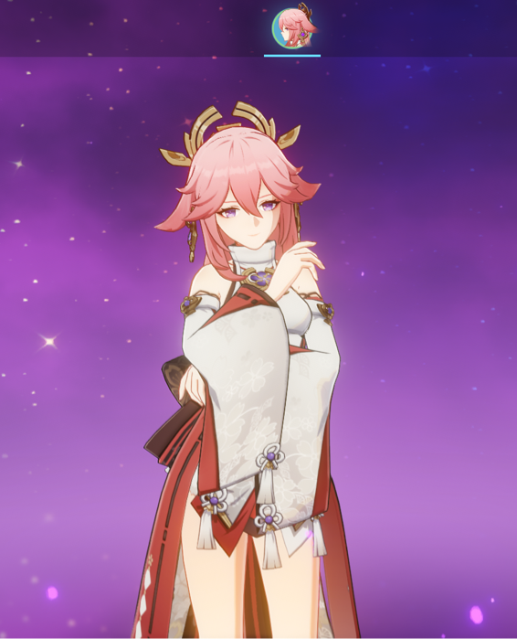
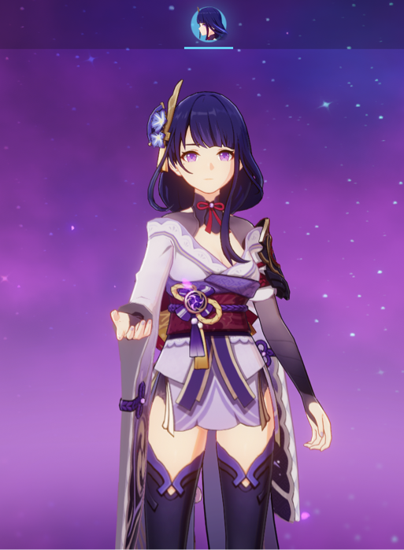
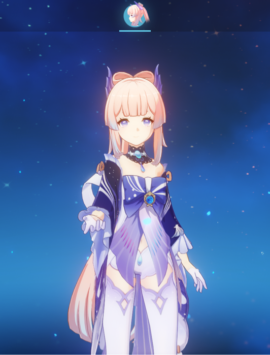

| Yae Miko | Raiden Shogun | Sangonomiya Kokomi |
|---|---|---|
|  |  |  |
| Lady Yae Miko oversees the Grand Narukami Shrine and is the editor-in-chief of the Yae Publishing House. A very clever and devious personality lies underneath her beautiful appearance. | Her excellency, Raiden Shogun, rules over and protects the nation of Inazuma from the clutches of evil. | The young Divine Priestess of Watatsumi Island. Kokomi is in charge of all of Watatsumi’s affairs, shouldering heavy responsibilities in hopes of giving Watatsumi Island’s people the things they desire. |
The Raiden Shogun boss fight, together with The End of the Oneiric Euthymia domain is unlocked upon completing Raiden Shogun’s Story Quest Act 2. It is a special form of Raiden Shogun, formally called Magatsu Mitake Narukami no Mikoto. Once players unlock the fight, it becomes a weekly boss that players can challenge once a week to obtain artifacts (in-game spelling), talent level-up materials, and crafting materials.
Enkanomiya has been wrapped in a darkness of unknown origin. For the sake of Watatsumi Island’s future, Kokomi commissions you to once again head down to Enkanomiya…
- “Genshin Impact”
*The bibliography for the website can be found here: Citations